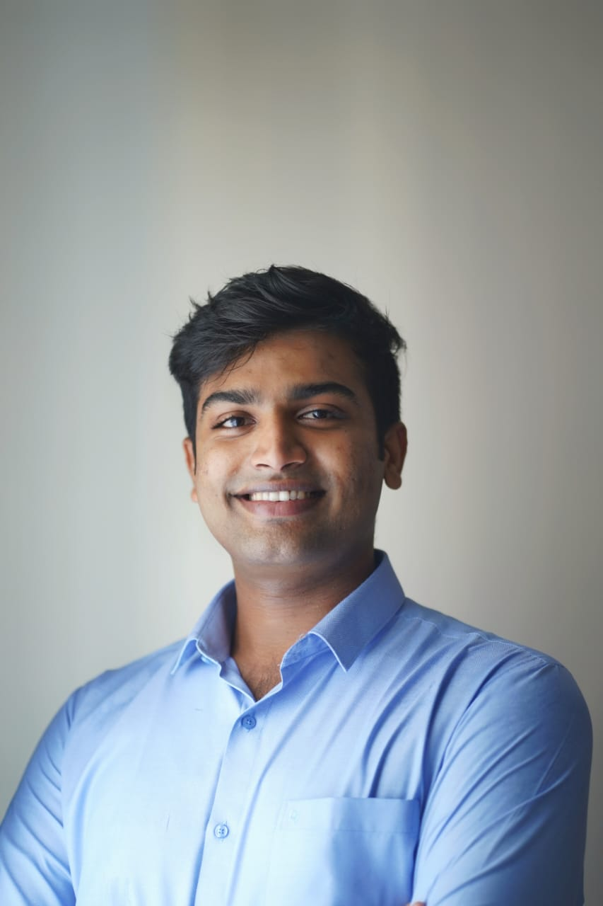

Supply chain
Connecting planning, inventory and order management with the everyday needs of operations.
Planning · Inventory · OrdersSUPPLY CHAIN · OPERATIONAL EXCELLENCE
Connecting supply chains.
Improving operations.
With experience spanning food production, order management and supply chain planning, I bring practical operational knowledge and analytical thinking to improving how work gets done. My goal is to grow into a leader who develops people and drives continuous improvement.

My experience spans food production, order management and supply chain planning. I bring a practical understanding of operations and an analytical approach to improving how work gets done.
Connecting planning, inventory and order management with the everyday needs of operations.
Planning · Inventory · OrdersUsing operational data to understand stock, support decisions and identify opportunities for improvement.
SAP · Advanced Excel · Power BIBringing hands-on production experience and a continuous improvement mindset to practical challenges.
Production · Processes · ImprovementUnderstand the operation. Find clarity in the data. Make progress together. I enjoy work that combines hands-on supply chain experience, analysis and continuous improvement—and I aim to grow into a leader who listens, develops people and helps teams succeed.
02 / EXPERIENCE
Connecting operational experience with the tools and methods to plan, analyse and improve.
04 / PROJECTS
Planned independent demonstrations using entirely synthetic data. These projects are not yet published and do not represent employer project results.
PLANNED DEMONSTRATION
Which items need attention? A planned dashboard exploring stock coverage, ABC classes and slow-moving inventory.
PLANNED DEMONSTRATION
How can demand be balanced against available capacity? A planned model comparing production workload and capacity constraints.
Technical foundations in mechanical engineering, developed through master’s studies in Operational Excellence.
Master’s studies
Hof University of Applied Sciences
Germany
Focus areas: supply chain management, production logistics, quality, factory planning, leadership and change management.
Bachelor of Technology
APJ Abdul Kalam Technological University
India
Supply chain, production and continuous improvement.
Let’s explore what I could bring to your team.